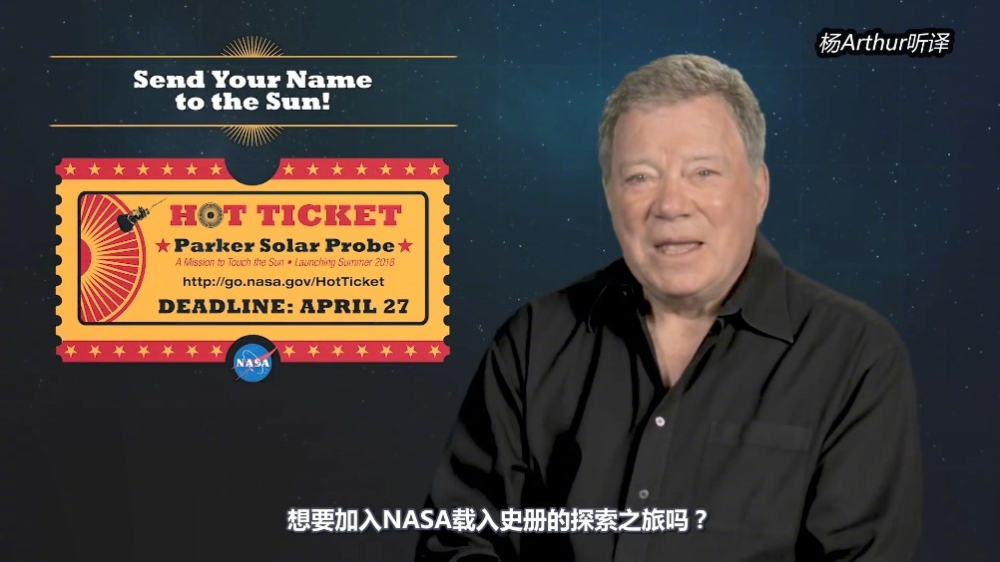

回复@charles_MAO:有产品我就会开始关注，计算历史估值，设计投资方案，纳入整个体系。现在有些品种不关注，是因为没有产品，关注也没用。@ETF拯救世界:继续以1/3的仓位完胜沪深300。怎么港，买入不同特点的指数是非常有必要的。
回复@小祝Joochill:真的假的。我一直认为金融市场一定与物理有相关性，只是还没有被发掘出来。很简单，金融是波动的，一定有规律。无非是一些外部变量和内部变量影响了波动的频率和力度。我个人认为大有可为。//@小祝Joochill:E大，我是物理学博士，咱们可以探讨@NASA爱好者:NASA在帕克太阳探测器上放置了一枚芯片，邀请公众填写自己的名字，在今年夏天随着帕克太阳探测器一同送至离太阳最近的地方。报名地址：网页链接 ，截止日期为2018年4月27日。这段视频由“杨Arthur”听译。尽管帕克太阳探测器会为我们对理解日冕，并了解太阳风的起源和演化带来革命性的认知。与所有伟大的探测器一样，帕克太阳探测器可能会给我们带回更多的问题，也就是问题总比答案多。 NASA爱好者的秒拍视频 74万次播放 00:54
回复@蜜糖即砒霜:我周末正在看量子物理。准备将经典物理的波动与投资结合起来。。//@蜜糖即砒霜:三体看了2遍，入坑理论物理推荐E大看一看//@ETF拯救世界:真好，暴露坐标后二向箔已经在路上了。大家吃好，玩好。//@买买提X:填了。。好期待，外星人会给我发邮件么？@NASA爱好者:NASA在帕克太阳探测器上放置了一枚芯片，邀请公众填写自己的名字，在今年夏天随着帕克太阳探测器一同送至离太阳最近的地方。报名地址：网页链接 ，截止日期为2018年4月27日。这段视频由“杨Arthur”听译。尽管帕克太阳探测器会为我们对理解日冕，并了解太阳风的起源和演化带来革命性的认知。与所有伟大的探测器一样，帕克太阳探测器可能会给我们带回更多的问题，也就是问题总比答案多。 NASA爱好者的秒拍视频 74万次播放 00:54
关于为什么不“高位卖出，低位买回”，这样的说法。这样做，理论上是可行的。但是实际操作起来很难。因为你要保证卖出后就跌，然后还要保证涨之前能买回来。真的真的很难。比如我之前买的一只港股。ETF拯救世界: 上个月底开了美股账户以后第一只20%。虽然是在港股市场买的吧。 股票现在就这两只，京东和prada。其它全是ETF了。E...一个月赚了20%。美滋滋卖掉了。想跌回去再买。结果今天一天涨了20%。这都是小游戏，无所谓。然而如果在大的仓位犯这种错误，就要吃大亏。几年的等待就白干了。最好的策略是每次跌下去就买，回到高点后，你就赚得更多。至于什么时候卖，不急，持有，等极度高估。或者，中周期做动态平衡。指数这样做，要比股票容易得多。股票估值太难了。
真好，暴露坐标后二向箔已经在路上了。大家吃好，玩好。//@买买提X:填了。。好期待，外星人会给我发邮件么？@NASA爱好者:NASA在帕克太阳探测器上放置了一枚芯片，邀请公众填写自己的名字，在今年夏天随着帕克太阳探测器一同送至离太阳最近的地方。报名地址：网页链接 ，截止日期为2018年4月27日。这段视频由“杨Arthur”听译。尽管帕克太阳探测器会为我们对理解日冕，并了解太阳风的起源和演化带来革命性的认知。与所有伟大的探测器一样，帕克太阳探测器可能会给我们带回更多的问题，也就是问题总比答案多。 NASA爱好者的秒拍视频 74万次播放 00:54